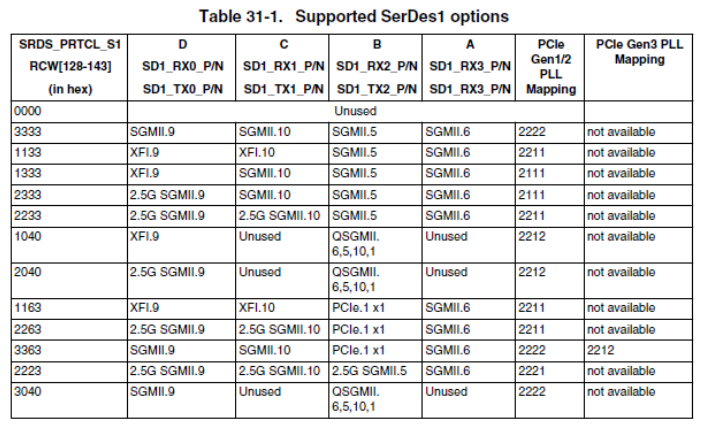
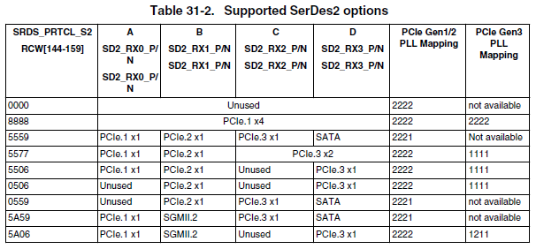
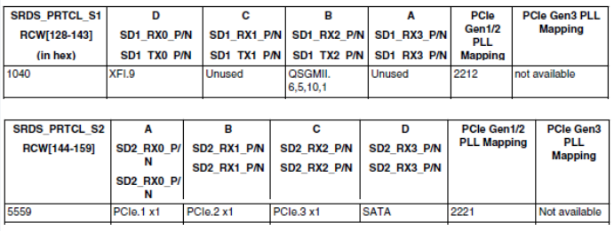
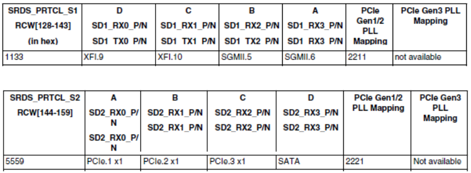
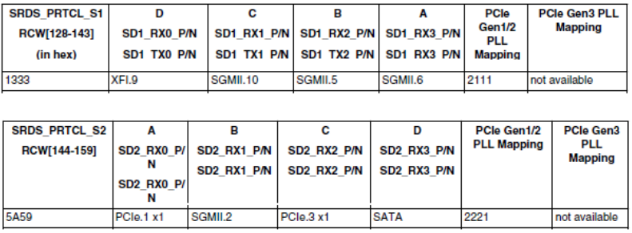
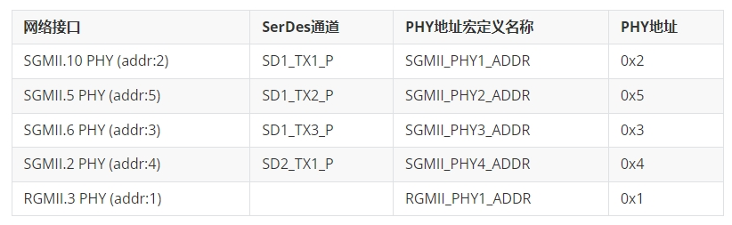

OK1046A-Ubuntun18.04_Ethernet
Document classification: □ Top secret □ Secret □ Internal information ■ Open
Copyright
The copyright of this manual belongs to Baoding Folinx Embedded Technology Co., Ltd. Without the written permission of our company, no organizations or individuals have the right to copy, distribute, or reproduce any part of this manual in any form, and violators will be held legally responsible.
Forlinx adheres to copyrights of all graphics and texts used in all publications in original or license-free forms.
The drivers and utilities used for the components are subject to the copyrights of the respective manufacturers. The license conditions of the respective manufacturer are to be adhered to. Related license expenses for the operating system and applications should be calculated/declared separately by the related party or its representatives.
Application Scope
This software manual is designed for the LS1046 platform running Ubuntu 18.04. While other platforms may also reference this manual, there could be differences that require adjustments for the specific use.
Revision History
Date |
Version |
Revision H |
|---|---|---|
11/05/2022 |
V1.0 |
Initial Version |
1. SerDes Configuration Scheme Modification
During the development process using LS1046, it is necessary to utilize various SerDes configuration schemes. This manual primarily discusses the software modifications.
Since the LS104x series development boards adopt the configuration method of the 【Reset configuration word】 (RCW), this method enables convenient definition of pin functions, i.e., realizes the PinMUX function of pins.
The SerDes Module unique to the LS104x platform also needs to be configured via RCW to assign different functions to different SerDes channels.
Taking the LS1046A as an example, the two configurable SerDes are:


However, the configuration method called RCW is not well - known. So, this manual takes an actual requirement of the LS1046A as an example to elaborate on the modification process for subsequent customization reference.
Forlinx offers two SerDes configuration schemes, namely 1040_5559 and 1133_5559. Corresponding to the functions in the above table, the functions of these two SerDes are respectively:
1040_5559：

You can see that there is one XFI for MAC 9, one QSGMII for MAC6, MAC5, MAC10, and MAC1, and in addition, there are three PCIe x1 interfaces.
1133_5559：

You can see that there is one XFI for MAC 9, one XFI for MAC10, one SGMII for MAC5, one SGMII for MAC6, and in addition, there are three PCIe x1 interfaces.
At this time, if a project requires 5 network ports: one is the RGMII network port built - in the SoM, and the other four are SGMII network ports led out by SerDes. It is found that the two SerDes configurations provided by Forlinx do not meet the requirements. Then, after consulting the SerDes configuration table, it is found that 1333_5a59 can meet the requirements:

Then, the configuration modification will be carried out with this as an example.。
First, sort out the corresponding relationship between PHY and MAC in the project:

First of all, it is necessary to know that the locations of the two RCW files of OK1046A - C in the source code are:
flexbuild/packages/firmware/rcw/ls1046ardb/FORLINX/rcw_1800_qspiboot_1040_5559.rcw
flexbuild/packages/firmware/rcw/ls1046ardb/FORLINX/rcw_1800_qspiboot_1133_5559.rcw
For the convenience of development, modifications are made based on rcw_1800_qspiboot_1133_5559.rcw.
1.1 RCW Configuration Modification
First, modify the RCW configuration to 1333_5a59, and respectively modify the values of SRDS_PRTCL_S1 and SRDS_PRTCL_S2. Here, convert hexadecimal to decimal. For example, the decimal value of 0x1333 is 4915, and the decimal value of 0x5a59 is 23129.
---a/flexbuild/packages/firmware/rcw/ls1046ardb/FORLINX/rcw_1800_qspiboot_1133_5559.rcw
+++b/flexbuild/packages/firmware/rcw/ls1046ardb/FORLINX/rcw_1800_qspiboot_1133_5559.rcw
@@ -69,8 +69,8 @@ SYS_PLL_RAT=7
MEM_PLL_RAT=21
CGA_PLL1_RAT=18
CGA_PLL2_RAT=16
-SRDS_PRTCL_S1=4403
-SRDS_PRTCL_S2=21849
+SRDS_PRTCL_S1=4915
+SRDS_PRTCL_S2=23129
SRDS_PLL_REF_CLK_SEL_S1=1
SRDS_PLL_REF_CLK_SEL_S2=0
SRDS_DIV_PEX_S1=1
@@ -88,7 +88,7 @@ SPI_EXT=1
SPI_BASE=2
1.2 Uboot Configuration Modification
First, add the definition of the required PHY address in the header file.
The location of this file in the source code is:
flexbuild/packages/firmware/u-boot/include/configs/ls1046ardb.h
--- a/include/configs/ls1046ardb.h
+++ b/include/configs/ls1046ardb.h
@@ -179,7 +179,10 @@
#define RGMII_PHY1_ADDR 0x1
#define RGMII_PHY2_ADDR 0x2
-#define SGMII_PHY2_ADDR 0x3
+#define SGMII_PHY1_ADDR 0x2
+#define SGMII_PHY2_ADDR 0x5
+#define SGMII_PHY3_ADDR 0x3
+#define SGMII_PHY4_ADDR 0x4
#define QSGMII_PORT1_PHY_ADDR 8
#define QSGMII_PORT2_PHY_ADDR 9
The location of the network initialization code of Uboot in the source code is:
flexbuild/packages/firmware/u-boot/board/freescale/ls1046ardb/eth.c
At this time, the configuration of the network part needs to be modified.
--- a/board/freescale/ls1046ardb/eth.c
+++ b/board/freescale/ls1046ardb/eth.c
@@ -35,28 +35,33 @@ int board_eth_init(bd_t *bis)
/* Register the 1G MDIO bus */
fm_memac_mdio_init(bis, &dtsec_mdio_info);
+ /*
+ //Comment out the definition of the MDIO bus of the 10 Gigabit network on the original carrier board
tgec_mdio_info.regs =
(struct memac_mdio_controller *)CONFIG_SYS_FM1_TGEC_MDIO_ADDR;
tgec_mdio_info.name = DEFAULT_FM_TGEC_MDIO_NAME;
+ */
/* Register the 10G MDIO bus */
- fm_memac_mdio_init(bis, &tgec_mdio_info);
+ //Comment out the initialization of the MDIO bus for the original 10-gigabit network on the original carrier board
+ /*fm_memac_mdio_init(bis, &tgec_mdio_info);*/
/* Set the two on-board RGMII PHY address */
fm_info_set_phy_address(FM1_DTSEC3, RGMII_PHY1_ADDR);
- fm_info_set_phy_address(FM1_DTSEC4, RGMII_PHY2_ADDR);
+ //Comment out the binding of MAC and PHY for the RGMII network port of MAC4 on the original carrier board
+ //fm_info_set_phy_address(FM1_DTSEC4, RGMII_PHY2_ADDR);
/* Set the on-board AQ PHY address */
- fm_info_set_phy_address(FM1_10GEC1, FM1_10GEC1_PHY_ADDR);
+ //Comment out the binding of MAC and PHY for the 10-gigabit network port on the carrier board
+ //fm_info_set_phy_address(FM1_10GEC1, FM1_10GEC1_PHY_ADDR);
switch (srds_s1) {
+ //Modify the SGMII network-related configuration of SerDes
- case 0x1133:
+ case 0x1333:
/* Set the two on-board SGMII PHY address */
//fm_info_set_phy_address(FM1_DTSEC5, SGMII_PHY1_ADDR);
//Disable MAC5 and bind MAC6 to its associated PHY address
- fm_disable_port(FM1_DTSEC5);
- fm_info_set_phy_address(FM1_DTSEC6, SGMII_PHY2_ADDR);
- run_command("setenv serdes1 1133", 0);
+ fm_disable_port(FM1_DTSEC4);
+ //Bind MAC10, MAC5, MAC6, and MAC2 to their respective associated PHY addresses
+ fm_info_set_phy_address(FM1_DTSEC10, SGMII_PHY1_ADDR);
+ fm_info_set_phy_address(FM1_DTSEC5, SGMII_PHY2_ADDR);
+ fm_info_set_phy_address(FM1_DTSEC6, SGMII_PHY3_ADDR);
+ fm_info_set_phy_address(FM1_DTSEC2, SGMII_PHY4_ADDR);
+ //Set the environment variable serdes1 to 1333.
+ run_command("setenv serdes1 1333", 0);
break;
case 0x1040:
/* QSGMII on lane B, MAC 6/5/10/1 */
@@ -81,9 +86,11 @@ int board_eth_init(bd_t *bis)
fm_info_set_mdio(i, dev);
/* XFI on lane A, MAC 9 */
+ /*
+ //Comment out the registration of the mounted MAC on the MDIO bus for the 10-gigabit network on the original carrier board
dev = miiphy_get_dev_by_name(DEFAULT_FM_TGEC_MDIO_NAME);
fm_info_set_mdio(FM1_10GEC1, dev);
-
+ */
cpu_eth_init(bis);
#endif
After modifying this part, the code modification of the network configuration in the Uboot part is completed.
1.3 Device Tree Modification
Note: Please refer to the actual device tree path when making modifications.
First, it is necessary to know the locations of the device tree files corresponding to the two RCW configurations of OK1046A - C in the source code.
flexbuild/packages/linux/linux/arch/arm64/boot/dts/freescale/fsl-ls1046a-rdb-sdk-1040-5559.dts
flexbuild/packages/linux/linux/arch/arm64/boot/dts/freescale/fsl-ls1046a-rdb-sdk-1133-5559.dts
The device tree can also be modified based on fsl-ls1046a-rdb-sdk-1133-5559.dts. First, the Makefile of the device tree needs to be modified to add the compilation of the required DTS file.
--- a/arch/arm64/boot/dts/freescale/Makefile
+++ b/arch/arm64/boot/dts/freescale/Makefile
@@ -14,6 +14,7 @@ dtb-$(CONFIG_ARCH_LAYERSCAPE) += fsl-ls1046a-qds-sdk.dtb
dtb-$(CONFIG_ARCH_LAYERSCAPE) += fsl-ls1046a-rdb.dtb
dtb-$(CONFIG_ARCH_LAYERSCAPE) += fsl-ls1046a-rdb-sdk.dtb
dtb-$(CONFIG_ARCH_LAYERSCAPE) += fsl-ls1046a-rdb-sdk-1133-5559.dtb
+dtb-$(CONFIG_ARCH_LAYERSCAPE) += fsl-ls1046a-rdb-sdk-1333-5a59.dtb
dtb-$(CONFIG_ARCH_LAYERSCAPE) += fsl-ls1046a-rdb-sdk-1040-5559.dtb
dtb-$(CONFIG_ARCH_LAYERSCAPE) += fsl-ls1046a-rdb-usdpaa-1133-5559.dtb
dtb-$(CONFIG_ARCH_LAYERSCAPE) += fsl-ls1046a-rdb-usdpaa-1040-5559.dtb
Secondly, copy and rename the dts file, and execute the command.
cp flexbuild/packages/linux/linux/arch/arm64/boot/dts/freescale/fsl-ls1046a-rdb-sdk-1133-5559.dts
flexbuild/packages/linux/linux/arch/arm64/boot/dts/freescale/fsl-ls1046a-rdb-sdk-1333-5a59.dts
Next, modify the fsl-ls1046a-rdb-sdk-1333-5a59.dts file.
--- arch/arm64/boot/dts/freescale/fsl-ls1046a-rdb-sdk-1333-5a59.dts
+++ arch/arm64/boot/dts/freescale/fsl-ls1046a-rdb-sdk-1333-5a59.dts
@@ -54,8 +54,9 @@
};
+ /* Enable MAC2, register it with the interface as SGMII, and set the PHY address to sgmii_phy4 (i.e., 4)
ethernet@e2000 {
- status = "disabled";
- };
+ phy-handle = <&sgmii_phy4>;
+ phy-connection-type = "sgmii";
+ };
ethernet@e4000 {
phy-handle = <&rgmii_phy1>;
@@ -63,27 +64,26 @@
};
+ /* Disable MAC4 */
ethernet@e6000 {
- phy-handle = <&rgmii_phy2>;
- phy-connection-type = "rgmii-txid";
+ status = "disabled";
};
+ /* Enable MAC5, register it with the SGMII interface, and set the PHY address to sgmii_phy2 (i.e., 5)
ethernet@e8000 {
- status = "disabled";
- };
+ phy-handle = <&sgmii_phy2>;
+ phy-connection-type = "sgmii";
+ };
+ /* Enable MAC6, register it with the SGMII interface, and set the PHY address to sgmii_phy3 (i.e., 3)
ethernet@ea000 {
- phy-handle = <&sgmii_phy2>;
+ phy-handle = <&sgmii_phy3>;
phy-connection-type = "sgmii";
};
+ /* Disable MAC9, i.e., disable the 10-gigabit network interface on the carrier board */
- ethernet@f0000 { /* 10GEC1 */
- phy-handle = <&aqr105_phy>;
- phy-connection-type = "xgmii";
+ ethernet@f0000 {
+ status = "disabled";
};
+ /* Enable MAC10, register it with the SGMII interface, and set the PHY address to sgmii_phy1 (i.e., 2) */
- ethernet@f2000 { /* 10GEC2 */
- fixed-link = <0 1 1000 0 0>;
- phy-connection-type = "xgmii";
+ ethernet@f2000 {
+ phy-handle = <&sgmii_phy1>;
+ phy-connection-type = "sgmii";
};
mdio@fc000 {
@@ -91,20 +91,21 @@
reg = <0x1>;
};
+ /* Modify PHY address */
- rgmii_phy2: ethernet-phy@2 {
- reg = <0x2>;
- };
+ sgmii_phy1: ethernet-phy@2 {
+ reg = <0x2>;
+ };
- sgmii_phy2: ethernet-phy@3 {
- reg = <0x3>;
+ sgmii_phy2: ethernet-phy@5 {
+ reg = <0x5>;
+
+ sgmii_phy3: ethernet-phy@3 {
+ reg = <0x3>;
+ };
+
+ sgmii_phy4: ethernet-phy@4 {
+ reg = <0x4>;
+ };
};
+ /* Disable MDIO for 10 Gigabit Network */
- mdio@fd000 {
- aqr105_phy: ethernet-phy@0 {
- compatible = "ethernet-phy-ieee802.3-c45";
- reg = <0x0>;
- };
};
};
@@ -130,13 +131,15 @@
ethernet@0 {
status = "disabled";
};
+ /*Modify dpaa configuration, disable MAC1, MAC4 and MAC9, and enable MAC2，MAC3，MAC5，MAC6，MAC10*/
- ethernet@1 {
+ ethernet@3 {
status = "disabled";
};
- ethernet@4 {
- status = "disabled";
- };
-
+ ethernet@8 {
+ status = "disabled";
+ };
ethernet@9 {
compatible = "fsl,dpa-ethernet";
fsl,fman-mac = <&enet7>;
At this point, the code modification of the device tree part is completed.
The complete source code of the modified device tree is as follows:
#include "fsl-ls1046a-rdb.dts"
#include "qoriq-qman-portals-sdk.dtsi"
#include "qoriq-bman-portals-sdk.dtsi"
&fman0 {
ethernet@e0000 {
status = "disabled";
};
ethernet@e2000 {
phy-handle = <&sgmii_phy4>;
phy-connection-type = "sgmii";
};
ethernet@e4000 {
phy-handle = <&rgmii_phy1>;
phy-connection-type = "rgmii-txid";
};
ethernet@e6000 {
status = "disabled";
};
ethernet@e8000 {
phy-handle = <&sgmii_phy2>;
phy-connection-type = "sgmii";
};
ethernet@ea000 {
phy-handle = <&sgmii_phy3>;
phy-connection-type = "sgmii";
};
ethernet@f0000 {
status = "disabled";
};
ethernet@f2000 {
phy-handle = <&sgmii_phy1>;
phy-connection-type = "sgmii";
};
mdio@fc000 {
rgmii_phy1: ethernet-phy@1 {
reg = <0x1>;
};
sgmii_phy1: ethernet-phy@2 {
reg = <0x2>;
};
sgmii_phy2: ethernet-phy@5 {
reg = <0x5>;
};
sgmii_phy3: ethernet-phy@3 {
reg = <0x3>;
};
sgmii_phy4: ethernet-phy@4 {
reg = <0x4>;
};
};
};
&bman_fbpr {
compatible = "fsl,bman-fbpr";
alloc-ranges = <0 0 0x10000 0>;
};
&qman_fqd {
compatible = "fsl,qman-fqd";
alloc-ranges = <0 0 0x10000 0>;
};
&qman_pfdr {
compatible = "fsl,qman-pfdr";
alloc-ranges = <0 0 0x10000 0>;
};
&soc {
#include "qoriq-dpaa-eth.dtsi"
#include "qoriq-fman3-0-6oh.dtsi"
};
&fsldpaa {
ethernet@0 {
status = "disabled";
};
ethernet@3 {
status = "disabled";
};
ethernet@8 {
status = "disabled";
};
ethernet@9 {
compatible = "fsl,dpa-ethernet";
fsl,fman-mac = <&enet7>;
dma-coherent;
};
};
&fman0 {
compatible = "fsl,fman", "simple-bus";
};
1.4 Flex - build Compilation Tool Modification
Since a device tree file is added and the SerDes configuration in the RCW part is modified, there will be some problems when the flex - build compilation tool creates the burning image, and corresponding modifications are required.
This part mainly involves Uboot selecting and loading the corresponding dts device tree file by reading the serdes1 parameter in the environment variable.
The location of the relevant file in the source code is:
flexbuild/configs/board/ls1046ardb/manifest
The modification content is:
--- a/flexbuild/configs/board/ls1046ardb/manifest
+++ b/flexbuild/configs/board/ls1046ardb/manifest
@@ -39,7 +39,7 @@ securevalidate_enc="setenv secureboot_validate 'load \$devtype \$devnum:2 \$kern
securevalidate_dec="setenv secureboot_validate 'size \$devtype \$devnum:2 /Image;setexpr imgsize \$filesize - 0x30 ;echo Decapsulating linux image; setenv key_addr 0x87000000; mw \$key_addr $key_id_1;setexpr \$key_addr \$key_addr + 0x4; mw \$key_addr $key_id_2;setexpr \$key_addr \$key_addr + 0x4; mw \$key_addr key_id_3;setexpr \$key_addr \$key_addr + 0x4; mw \$key_addr $key_id_4; blob dec \$kernel_addr_r \$load_addr \$imgsize \$key_addr; cp.b \$load_addr \$kernel_addr_r \$filesize ;size \$devtype \$devnum:2 /fsl-ls1046a-rdb-sdk.dtb;setexpr imgsize \$filesize - 0x30 ;echo Decapsulating dtb image; blob dec \$fdt_addr_r \$load_addr \$imgsize \$key_addr; cp.b \$load_addr \$fdt_addr_r \$filesize ; '"
-distroboot='part uuid $devtype $devnum:3 partuuid3; setenv bootargs console=ttyS0,115200 earlycon=uart8250,mmio,0x21c0500 root=PARTUUID=$partuuid3 rw rootwait $othbootargs; if load $devtype $devnum:2 $load_addr /boot/uEnv.txt; then echo Importing environment from uEnv.txt ...; env import -t $load_addr $filesize; fi; load $devtype $devnum:2 $kernel_addr_r /boot/Image;load $devtype $devnum:2 $fdt_addr_r /boot/fsl-ls1046a-rdb-sdk-$serdes1-5559.dtb; env exists secureboot && echo validating secureboot && run secureboot_validate;booti $kernel_addr_r - $fdt_addr_r'
+distroboot='part uuid $devtype $devnum:3 partuuid3; setenv bootargs console=ttyS0,115200 earlycon=uart8250,mmio,0x21c0500 root=PARTUUID=$partuuid3 rw rootwait $othbootargs; if load $devtype $devnum:2 $load_addr /boot/uEnv.txt; then echo Importing environment from uEnv.txt ...; env import -t $load_addr $filesize; fi; load $devtype $devnum:2 $kernel_addr_r /boot/Image;load $devtype $devnum:2 $fdt_addr_r /boot/fsl-ls1046a-rdb-sdk-$serdes1-5a59.dtb; env exists secureboot && echo validating secureboot && run secureboot_validate;booti $kernel_addr_r - $fdt_addr_r'
Modify fsl-ls1046a-rdb-sdk-$serdes1-5559.dtb to fsl-ls1046a-rdb-sdk-$serdes1-5a59.dtb.
Secondly, modify the flex - builder source code to copy the newly added dtb file to the generated image path.
The location of the relevant file in the source code is: flexbuild/tools/flex - builder
The modification content is:
--- a/flexbuild/tools/flex-builder
+++ b/flexbuild/tools/flex-builder
@@ -459,7 +459,7 @@ gen_bootpart() {
if [ "$MACHINE" = "ls1046ardb" ]; then
cp $FBDIR/build/linux/linux/arm64/Image $FBDIR/build/images/boot
- cp $FBDIR/build/linux/linux/arm64/fsl-ls1046a-rdb-sdk-1133-5559.dtb $FBDIR/build/images/boot
+ cp $FBDIR/build/linux/linux/arm64/fsl-ls1046a-rdb-sdk-1333-5a59.dtb $FBDIR/build/images/boot
cp $FBDIR/build/linux/linux/arm64/fsl-ls1046a-rdb-sdk-1040-5559.dtb $FBDIR/build/images/boot
cp $FBDIR/build/firmware/u-boot/ls1046ardb/ls1046ardb_boot.scr $FBDIR/build/images/boot
cp $FBDIR/build/firmware/u-boot/ls1046ardb/ls1046ardb_update.scr $FBDIR/build/images
At this point, all the code modifications of the network part are completed.
Then, the system can be compiled by referring to the compilation section of the software manual, and then the system can be updated using a USB flash drive for use.